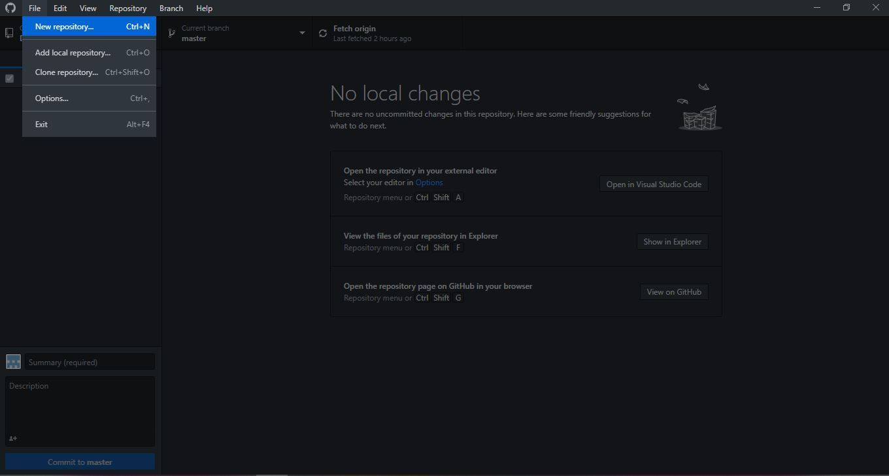
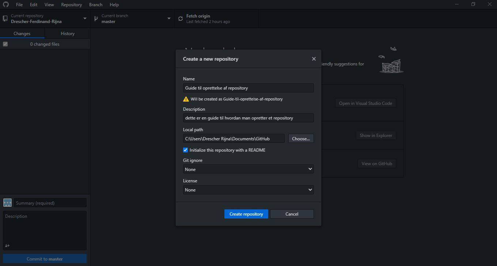
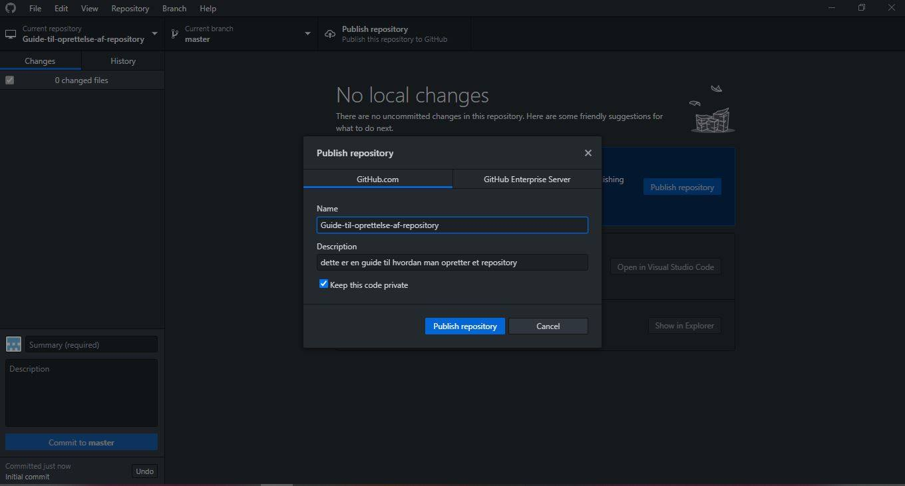
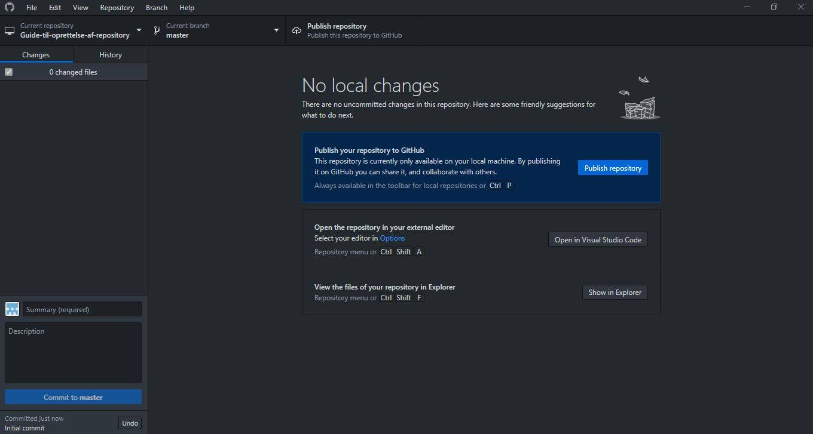

VERSIONSSTYRING
Hvad er versionsstyring og hvorfor det er relevant at bruge?
- Når man skal udvikle et software, er det vigtigt at holde styr på de forskellige versioner af filer. Versionsstyring er et værktøj, man anvender i dette tilfælde.
https://da.wikipedia.org/wiki/Versionsstyring
- Det er et vigtigt værktøj for udvikler, versionsstyring giver udvikler en lettere mulighed for at løse fejl eller få andre til at rette fejlen. Man kan desuden altid referere til gamle versioner, når du har brug for det.
Det gør det også muligt at flere udvikler kan arbejde på samme projekt.
https://kinsta.com/dk/videnbase/git-vs-github/
Hvad er Git og GitHub
- HVAD ER GIT: Linus Thorvalds har udviklet et Open Source-versionsstyringssystem: GIT, tilbage i 2005. Systemet blev udviklet til at håndtere LINUX-kernens kildetekster. GIT er den mest anvendte versionsstyringsystem
https://www.superusers.dk/artikel/git-versionsstyring/
- HVAD ER GITHUB: GitHub er en webbaseret platform, som vi kan opbevare koder i. GitHub bruges til at flere udviklere kan arbejde på et enkelt projekt og dermed, se hinandens redigeringer i realtid. GitHub indebærer også en projektorganisation, hvor det giver os mulighed for at tildele opgaver til grupper eller de enkelte. GitHub-lagre er tilgængelige for offentligheden, det vil sige at udviklere fra hele verden kan bidrage til hinandens kode.
https://kinsta.com/dk/videnbase/git-vs-github/
Oprettelse af et repository fra GitHub-Desktop




Væsentlige begbreber
REPOSITORY: En samling af dine filer, ligesom en projektmappe
BRANCH: En parallel version. En forgrening, men berører ikke master
MASTER BRANCH: Hovedforløbet, den som gælder
COMMIT: Det er at gemme, men man har muligheden for at finde tilbage. Det kan kaldes en milepæl
PULL REQUEST: Et forslag til en nye udgave (rettelser)
MERGE: Når ændringer i en branch samles med en anden (eks. gennem en pull request)
PULL: Når man henter ændringer og merger dem.
Versionsstyring.pdf